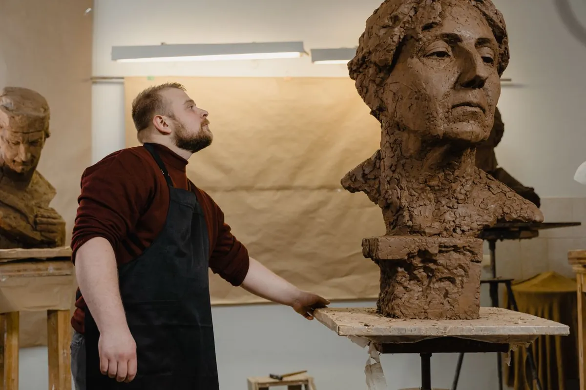
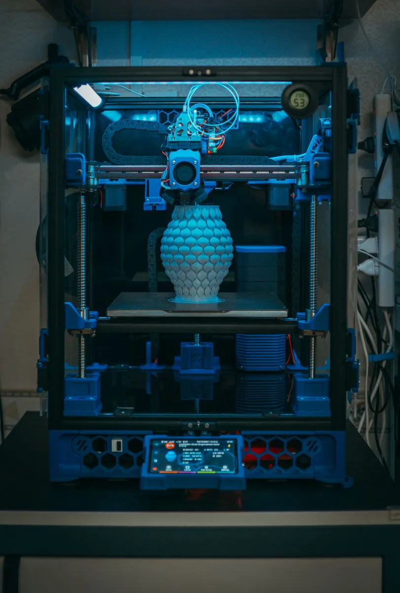

«Разве настоящий скульптор работает на компьютере?» — этот вопрос нам задают часто. Наш ответ: настоящий скульптор использует все доступные инструменты, чтобы достичь наилучшего результата. 3D‑моделирование не заменяет руку мастера — оно даёт точность, которую раньше было невозможно обеспечить.
Зачем 3D-моделирование в скульптуре
Традиционный процесс создания скульптуры непредсказуем: мастер лепит из глины, заказчик видит результат только на физической модели — уже после того, как потрачены деньги и время. Если что-то не так — всё переделывается.
3D‑моделирование меняет этот порядок: сначала создаётся цифровой двойник скульптуры, заказчик видит его на экране, вносит правки, утверждает — и только потом начинается физическое производство.

Цифра дополняет, а не заменяет
Мы не противопоставляем технологии классике. Сначала — точный цифровой каркас, затем — живая ручная лепка фактуры и характера.
Такой гибрид даёт лучшее от обоих миров: математическую точность пропорций и тепло авторской руки.
точность, с которой 3D‑модель воспроизводит геометрию надписей и механических деталей — недостижимо при ручной лепке «на глаз».
Как выглядит процесс
Шаг 1. Техническое задание и референсы
Мы собираем всю информацию о будущей работе: размеры, материал, стиль, назначение, место установки. Для портретных работ нужны фотографии в нескольких ракурсах — чем больше, тем точнее результат.
Шаг 2. Цифровое моделирование
В специализированном ПО создаётся трёхмерная модель. Это могут быть поли-моделлинг (точная геометрия) или цифровая скульптура (органические формы — лица, фигуры). Для механических деталей и надписей используем CAD-инструменты с точностью до десятых долей миллиметра.
Шаг 3. Согласование с клиентом
Рендер 3D‑модели отправляем заказчику: несколько ракурсов, иногда — анимация поворота. На этом этапе вносятся все правки: пропорции, детали, текст надписей. Это дешевле и быстрее, чем переделывать физическую модель.
Шаг 4. Производство
Утверждённую модель используют двумя способами:
- Фрезеровка — ЧПУ-станок вырезает мастер-модель из воска, пенополиуретана или дерева. Высокая точность, хорошо для симметричных форм.
- 3D‑печать — принтер послойно строит модель. Хорошо для сложных органических форм и тонких деталей.

Полученную мастер-модель мастер дорабатывает вручную: добавляет фактуру, шлифует, прочеканивает. Затем снимается форма и начинается литьё.
Реальный пример: скульптура «Весы»
Декоративные весы для Адлерского рынка высотой 2,5 м создавались именно так. Вначале — 3D‑модель, на которой согласовали пропорции и декоративные элементы. Это позволило точно рассчитать вес металла и избежать конструктивных ошибок до начала производства.
3D‑модель — это страховка. Она даёт клиенту уверенность, а мастеру — чёткое техническое задание. Ошибку в цифре исправить за 5 минут. Ошибку в металле — за 5 недель.
Преимущества для заказчика
- Видите результат до начала литья.
- Правки бесплатны на этапе цифровой модели.
- Точные размеры и пропорции гарантированы.
- Можно заказать несколько идентичных копий — форма воспроизводима точно.
Обсудим вашу скульптуру?
Покажем 3D-визуализацию до начала работ. Правки на этапе модели — бесплатно.
Написать в Telegram →